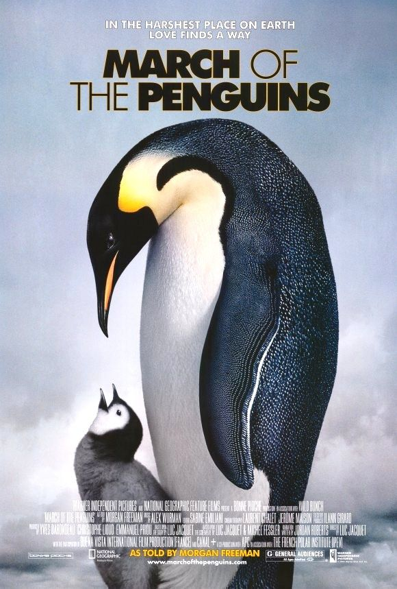
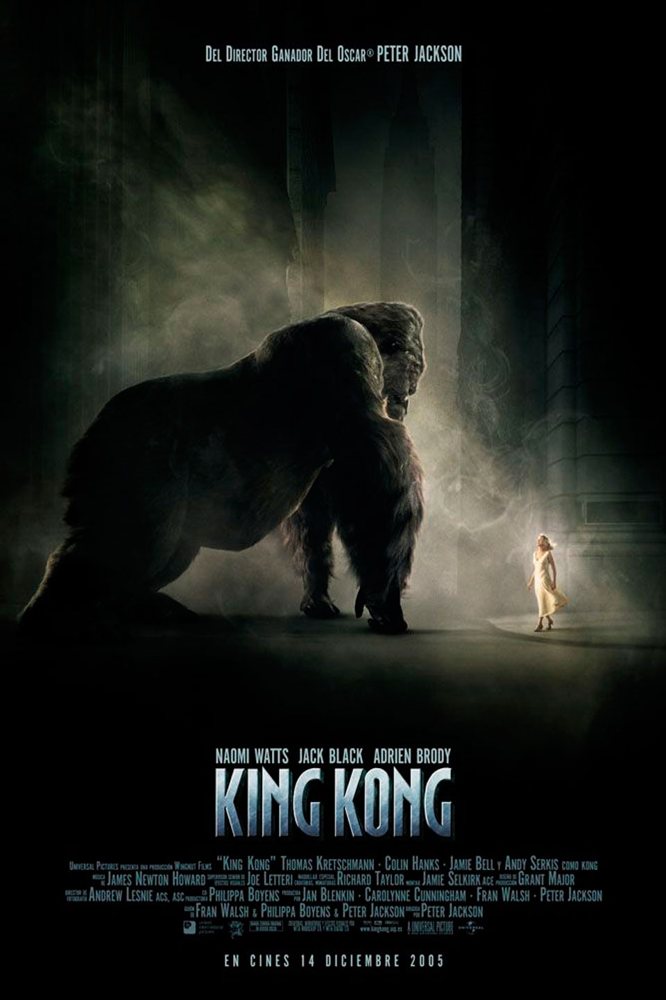

Para sorpresa de muchos, en África existen algunas especies de árboles que, para que sus semillas puedan germinar, primero deben pasar por el tracto digestivos de los elefantes. Otra importante características es que, gracias a las huellas de los elefantes, se puede crear un micro ecosistema que sirve de hábitat para renacuajos y otros organismos
TIENEN EL CEREBRO MÁS GRANDE DEL MUNDO ANIMAL
Aunque existen animales que son más grandes que el elefante, este mamífero cuenta con el cerebro más grande de todo el mundo animal, con una masa de poco más de 5 kg. Este órganos se asemeja bastante al cerebro humano en cuanto a la complejidad y su estructura, ya que incluso se cree que los elefantes son capaces de comprender la comunicación no verbal, como señalar.
VIVEN EN MATRIARCADOS
Los elefantes viven en manadas de hembras emparentadas entre sí y sus crías. Los elefantes machos abandonan la manada al llegar a la adolescencia y viven en grupos aislados o llevan existencias solitarias. Los adultos se acercan a las manadas cuando detectan hembras en celo. Una vieja hembra es la matriarca que conduce a la manada a las fuentes de agua y pastos nuevos.
JIRAFAS
DUERMEN MUY POCO
Una jirafa adulta necesita solamente entre dos y cuatro horas al día para descansar por completo, pero no lo hace seguido, pues el periodo más largo no suele superar las dos horas. Estos gigantes africanos suelen dormir a intervalos cortos, de unos diez minutos a lo largo del día. El tiempo de sueño profundo en cada siesta dura apenas un minuto.
PUEDEN ESTAR VARIOS DÍAS SIN BEBER AGUA
¿Sabías que los camellos no son aquellos animales que más tiempo pueden aguantar sin beber agua? Por delante se encuentran las jirafas, que pueden estar hasta tres semanas sin beber agua, mientras que un camello solo aguanta dos semanas. Otro dato curioso: sus cuellos pueden alcanzar los 3 metros y solo tienen 7 vértebras! Por estos motivos les resulta muy difícil doblarlo. Así que, antes de beber, abren lo máximo posible sus patas delanteras y después inclinan la cabeza para beber.
SUS LENGUAS PUEDEN MEDIR HASTA 50 CENTIMETROS
Esto les permite alcanzar las hojas más altas y evitar las púas de las acacias.
Además, sus lenguas son muy oscuras, casi negras. Esto se debe a que la utilizan constantemente y por lo tanto, la tienen fuera de la boca. Por ello, biológicamente necesitan que ésta tenga el suficiente contenido en melanina para actuar como protector solar.
BALLENAS
SE COMUNICAN CON MÚSICA
Un grupo de científicos aseguró que los sonidos emitidos por algunas ballenas tienen similitudes muy marcadas con la música pop. De hecho, se cree que sus tonalidades son tan pegadizas que los otros miembros del grupo también las cantan y que, cuando se aburren de emitir los mismos sonidos, inventan otros nuevos. Además, Algunas especies son atraídas por la música. Durante el 2013, un grupo de científicos hizo que las belugas escucharan música, a la cual respondieron con bailes sincronizados. Todavía no sabemos exactamente si aprecian la música o el estímulo hace que se muevan simulando un baile pero parecen disfrutarla bastante!
SE HACEN AMIGAS
Las ballenas son muy sociables, y las hembras lo son aún más. De hecho, estudios e investigaciones han descubierto que hacen "quedadas" con aquellas ballenas con las que han vivido experiencias y con las que disfrutan nadando o jugando. Como buenas amigas… Además, se cree que las que hacen esto tienen mejor estado de salud y mayor poder de concepción que las que están solas. Muy interesante, ¿no crees?
LA BALLENA AZUL ES EL ANIMAL MÁS GRANDE DEL MUNDO
La ballena azul puede llegar a medir 30 metros y pesar 180 mil kg . Su corazón es del tamaño de un auto y en su boca pueden entrar 100 personas. Increíble pero real!
Los 6 animales más exóticos del mundo
En el mundo existen más de 7 millones de especies, cada una con características que los hacen únicos. A algunas de ellas se las denominan exóticas por sus colores, forma física e incluso por su forma de vida.
MACACOS ONSEN
Son los únicos primates adaptados a temperaturas heladas y sobreviven a eso gracias a su pelaje símil a la lana que los aísla el frío cubriendo todo el cuerpo salvo la cara, las nalgas, las manos y los pies. Justamente esas son las zonas que se presentan de un color rosado/rojizo porque allí poseen numerosos vasos sanguíneos. Son de hábitos diurnos y muy sociales.
PATO MANDARÍN
Este espécimen es uno de los animales más coloridos que existen y por esta razón se lo considera exótico. Es originario de China, Japón y Rusia. Suele habitar en zonas próximas a lagos, charcas o lagunas. Con una elegancia sin igual y una explosión de color, este pato es considerado de buena fortuna para las creencias asiáticas, incluso en China se lo suele obsequiar como regalo de bodas.
LIGRE
Es un híbrido entre el tigre hembra y el león macho. Suele tener un tamaño superior que los tigres y los leones, los ligres machos más ancianos pueden quedar impedidos para caminar, al no poder sostener su propio peso. No se conoce de ningún caso en el que este animal no sea infértil. Su aspecto es como el de un león gigante con rayas de tigre y posee una coloración entre el amarillo y el naranja.
PANGOLÍN
Son los únicos mamíferos cubiertos de escamas y es el animal más traficado del mundo. La lengua de un pangolín puede ser más larga que su cuerpo. Son tan tímidos y solitarios que cuando se ven forzados a convivir o son arrancados de su entorno se estresan sobremanera: desarrollan úlceras, dejan de alimentarse, se vuelven agresivos y acaban por morir.
ZORRO DE FÉNEC
Son animales muy pequeños, no llegan a superar los 22 cm . Usan sus grandes orejas como ventilación y es un mamífero que habita en zonas del Sahara y Arabia. El también llamado zorro del desierto, tiene hábitos nocturnos que lo ayudan a superar el clima de su hábitat. Este animal soporta largos periodos sin beber agua, como muchos de los animales que viven en esos climas áridos.
DELFÍN ROSADO
Este mamífero se alimenta de peces, tortugas de río y cangrejos. Es amistoso, social y curioso por naturaleza. Como se desconoce su número de ejemplares, está catalogado como un animal en peligro de extinción. El delfín rosado tiene una visión aceptable para vivir en río y tiene una capacidad cerebral 40% mayor que la del ser humano. Se cree que llega al color rosado cuando alcanza la madurez.
El cuidado de tus mascotas
¡Nosotros amamos a las mascotas! Por eso consideramos que nunca está de más recordar los cuidados básicos que debes brindarle a tus queridos amigos.
PROTECCIÓN
Procura darle un lugar seguro donde resguardarse del frio y del calor.
AMOR Y RESPETO
Las mascotas no son juguetes ni objetos. Son seres que sienten y sufren. Antes de adquirir una mascota piensa si puedes cuidarla durante toda su vida que es de hasta 15 años.
ALIMENTACIÓN
Dale alimentación diaria, sana y balanceada. Tu mascota siempre debe tener agua fresca y limpia. Lava sus platos diariamente.
EJERCICIO
Los perros y gatos necesitan ejercicio esto ayuda a gastar energía y hacer menos destrozos. Lleva a tu perro a pasear con correa diariamente. No olvides recoger su popó con una bolsita y tirarla a la basura para evitar contaminación.
LIMPIEZA
Debes mantenerlo limpio, libre de pulgas y garrapatas. Debes bañar a tu perro cada 15 días con jabón especial y a los gatos es necesario cepillarlos para quitarles el polvo y pelo suelto. Mantén también limpia el área donde habita.
IDENTIFICACIÓN
Toda mascota debe portar una placa de identificación con su nombre y teléfono de su dueño, esta simple acción puede salvar su vida.
APARTADO ESPECIAL PARA CINÉFILOS
Seleccionamos las 3 mejores películas de animales. ¡Hay para todos los gustos!

Documental
En el mar se desenvuelve como pez en el agua, pero en tierra su andar es torpe. ¿Por qué el pingüino debe salir del oceáno para realizar una larga marcha por un desierto blanco e inhóspito, donde se desenvuelve con dificultad? A éste y a otros interrogantes responde este maravilloso documental, de preciosas música y fotografía.
Drama
Un perro fiel llamado Hachiko acompaña cada mañana a su amo a la estación de tren y regresa cada tarde para darle la bienvenida después del trabajo. Sin embargo, esta rutina se ve rota por una desgracia. Película inspirada en un caso real acontecido en la ciudad japonesa de Shibuya en 1924.

Acción
En el Nueva York de 1933, un productor cinematográfico excesivamente ambicioso coacciona a su elenco y a la tripulación del barco que ha contratado para viajar a la misteriosa isla Calavera, donde se encuentran con Kong, un simio gigante que se enamora inmediatamente de la actriz principal, Ann Darrow.